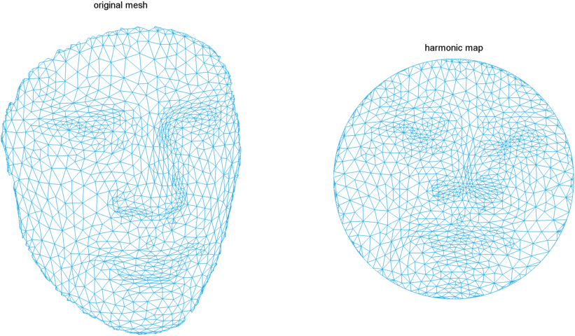
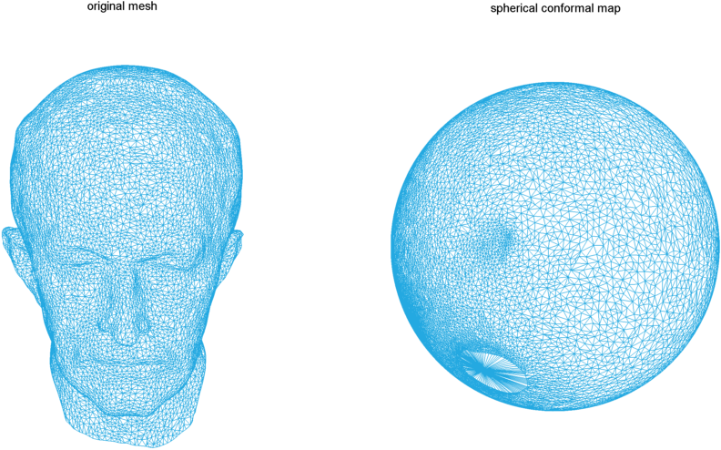
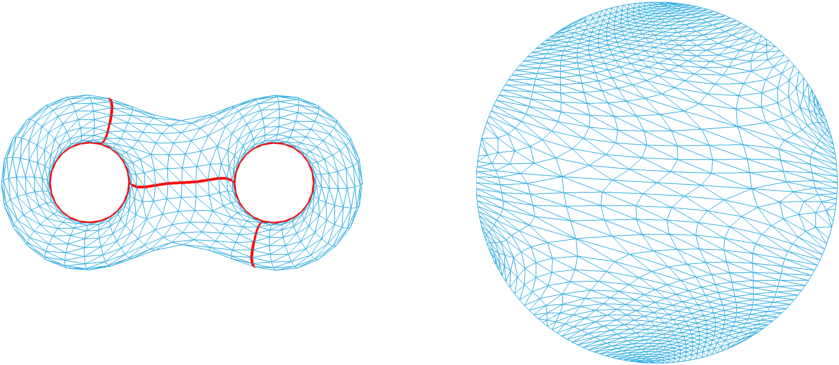
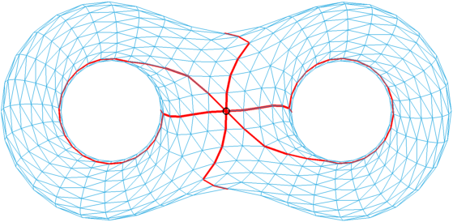
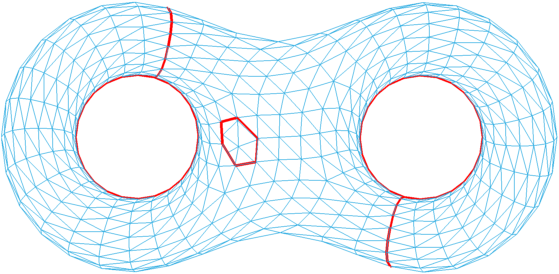

tutorial 2: algebra and topology - advanced
Now we show some high level operation on mesh.
Contents
Simply-connected surface
[face,vertex] = read_off('face.off'); % find the boundary bd = compute_bd(face); % since it's simply-connected, it can be embedded to a disk or unit square uv = disk_harmonic_map(face,vertex); corner = bd(1:floor(length(bd)/4):end)'; corner = corner(1:4); uv2 = rect_harmonic_map(face,vertex,corner); % plot mesh fig = figure('Position',[347 104 1079 611],'Color',[1 1 1]); subplot(1,2,1) plot_mesh(face,vertex) view(-90,-84) axis off title('original mesh') % plot embedding subplot(1,2,2) plot_mesh(face,uv) axis off title('harmonic map') export_fig html/tutorial/face.uv -png -transparent close(fig)

Genus-0 surface
[face,vertex] = read_off('maxplanck.nf25k.off'); % spherical harmonic map (is conformal) uvw = spherical_conformal_map(face,vertex); % plot mesh fig = figure('Position',[347 104 1079 611],'Color',[1 1 1]); subplot(1,2,1) plot_mesh(face,vertex) view(-180,-30) axis off title('original mesh') % plot mapping subplot(1,2,2) plot_mesh(face,uvw) view(-180,-30) axis off title('spherical conformal map') export_fig html/tutorial/maxplanck.nf25k -png -transparent close(fig)

High genus surface (genus > 0)
First we compute a cut graph of mesh, such that mesh is simply-connected if remove the cut graph
[face,vertex] = read_off('eight.off'); ee = cut_graph(face,vertex); % ee = cut_graph(face); % this one is faster % (face_new,vertex_new) is a simply-connected surface [face_new,vertex_new] = slice_mesh(face,vertex,ee); bd = compute_bd(face_new); fig = figure('Position',[347 104 1079 611],'Color',[1 1 1]); subplot(1,2,1) plot_mesh(face_new,vertex_new) axis off view(-90,-90) plot_path(face_new,vertex_new,bd); % since (face_new,vertex_new) is simply-connected, we can embed it to a disk uv = disk_harmonic_map(face_new,vertex_new); subplot(1,2,2) plot_mesh(face_new,uv) axis off export_fig html/tutorial/eight.uv -png -transparent close(fig)

We can compute basis of homotopy group
hb = compute_greedy_homotopy_basis(face,vertex,344); % 344 is base point fig = figure('Position',[530 148 717 560]); plot_mesh(face,vertex) view(-90,-90) plot_path(face,vertex,hb,[],344,'ko') % don't worry, we will not plot mesh again axis off export_fig html/tutorial/eight.homotopy -png -transparent close(fig)

We can also compute homology group basis
[face,vertex] = read_off('eight.hole.off'); % genus two surface with a hole hb = compute_homology_basis(face,vertex); fig = figure('Position',[530 148 717 560]); plot_mesh(face,vertex) view(-90,-90) plot_path(face,vertex,hb) % we will not plot mesh again axis off export_fig html/tutorial/eight.homology -png -transparent close(fig)
